The Modes and States Addon prototype adds “Configuration” as a new Capella element type. A configuration is associated to a component and describes the set of elements of the component that is active or enabled when the component is in a certain state.
For example, in an airplanes avionics system the Gear Up function would only be available when the airplane is in the air, while the Doors Open function would only be available when the airplane is in on the ground.
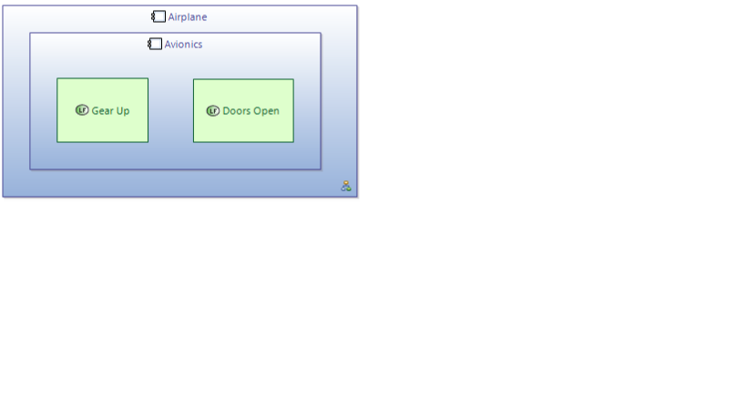
While this could perfectly be modeled with the help of Constraints, Configurations provide a more direct and easier way:
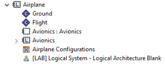
Two configurations "Ground" and "Flight" describe the availability for the avionics functions. The easiest way to edit configurations for a component is by using the crosstable diagram "Configuration Elements":
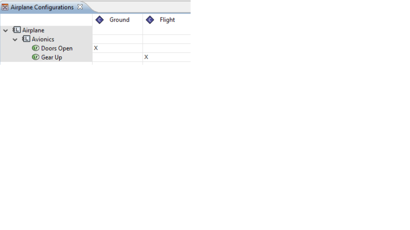
The last step is to associate the two configurations to the operation modes of the Airplane. This is done with the crosstable "Mode and Configuration":
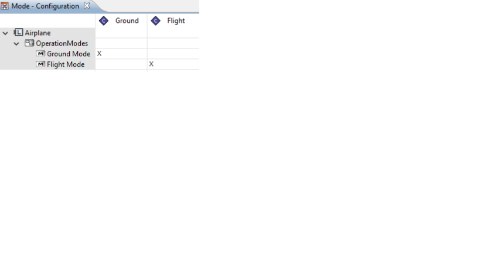
This viewpoint also adds an additional "Configurations" layer to the following types of diagrams:
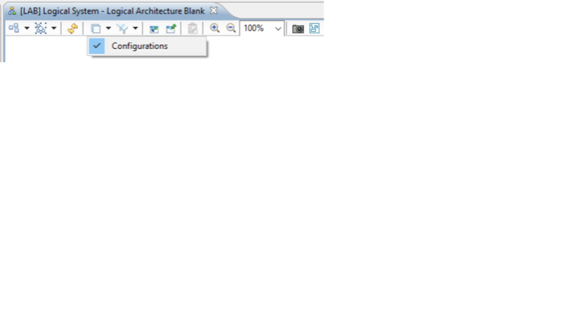
When the layer is active, two new tools are available in the palette:
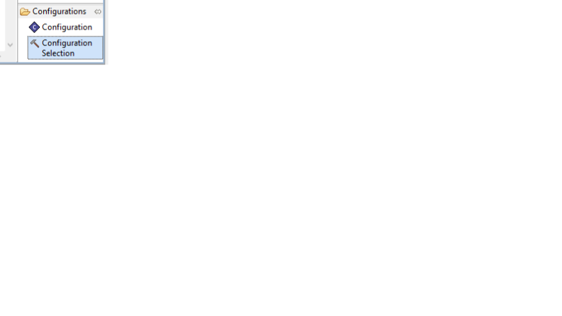
The "Configuration" and creates a new configuration element. A configuration is always associated to a single component, so the tool must be used on a component node. If the underlying diagram represents a component, the tool can also be used on the diagram canvas.
The "Configuration Selection" tool is also used on components and allows the addition of existing components to the diagram.
When a configuration is applied on a component, the components elements that are not active in the configuration are greyed out:
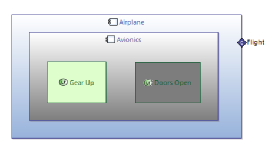
Note how the Avionics subcomponent is also greyed out, since the Flight configuration does not explicitly mark the component as active. If the Avionics component is included in the configuration:
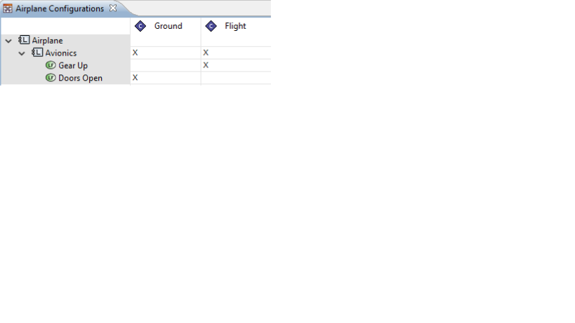
It will no longer be greyed out:
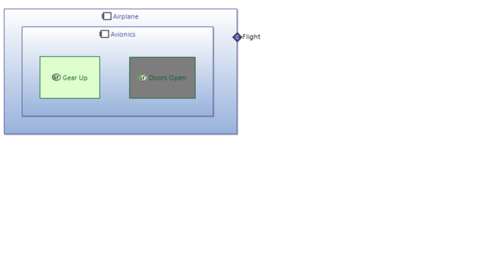
Apart from functions, a configuration may include ports, components, and functional chains. The "Configuration Elements" crosstable has several filters to show only elements of interest:
It is yet to be defined which elements a configuration may include and which not. The prototype supports three different options called “Configuration Access”. The three modes will be explained with the help of the following sample model. Configuration 1 is an empty configuration:
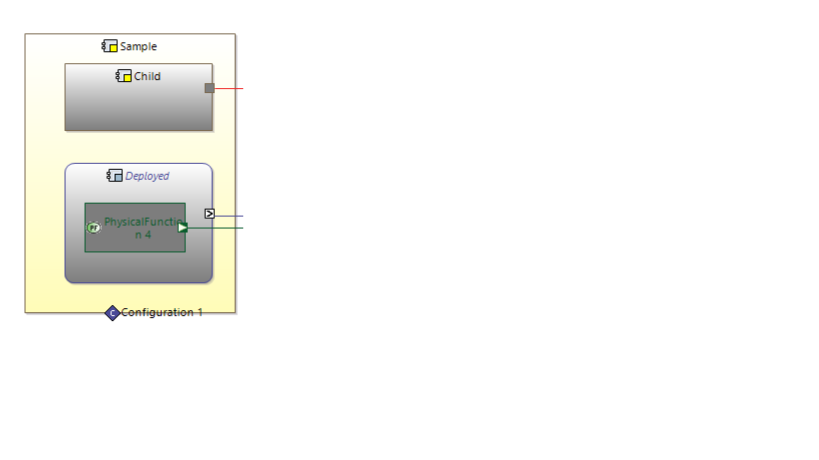
Flat: In this mode, a configuration may not include elements of subcomponents. Only its allocated functions, deployed/child components its owned ports and related functional chains may be included. For the example, the only allowed Elements for Configuration 1 would be "Child" and "Deployed".
Subcomponents. In this mode, a configuration may additionally include elements of its child components, but not elements of deployed components. For the example, the allowed additional elements for Configuration 1 would be the Physical Port on "Child".
Full In this mode, a configuration may additionally include elements of deployed components. This is the current default mode. For the example, the allowed additional elements would be the Physical Function, its port, and the component port on the deployed component.
The default access mode for new Configuration elements can be changed in the Capella Modes and States Preferences:
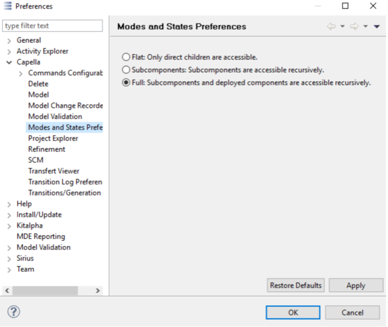
It is possible to define the elements of a configuration by inclusion (the default) or by exclusion: 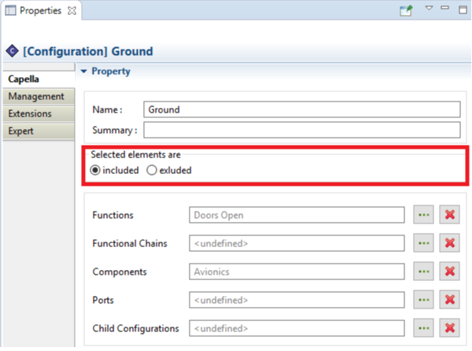
When using inclusion, the elements that are selected in the configuration make up the active elements of the configuration. All other elements in the configuration scope are inactive/disabled in the configuration. When using exclusion, the elements that are selected in the configuration make up the inactive elements of the configuration. All other elements in the configuration scope are active/enabled in the configuration. You can nicely see the effect of inclusion/exclusion when you change between inclusion/exclusion in an open xAB diagram with the configurations layer activated. In the example below, the function "Open Doors" the only referenced element by the configuration:
Element selection set to inclusion, the only active element is the "Doors Open" function.
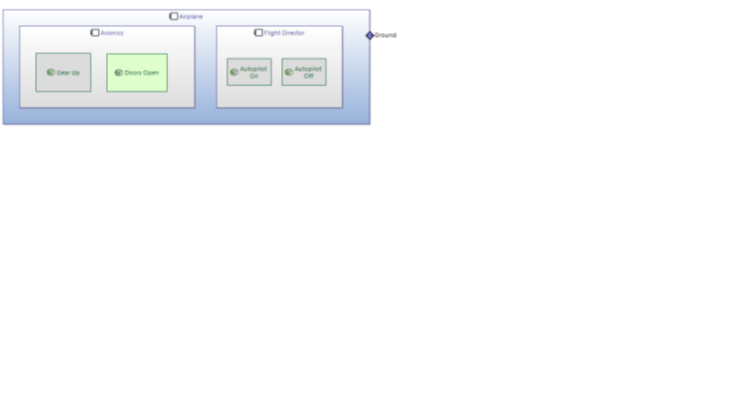
The same configuration, with element selection set to exclusion, all elements except the "Doors Open" function are active.
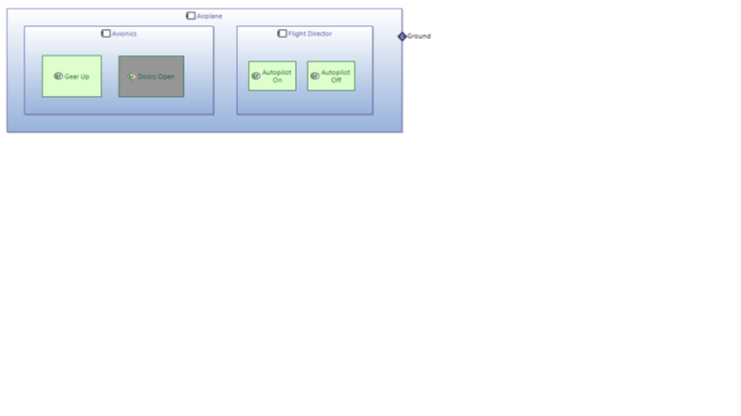
A configuration may define a set of child configurations. When such a configuration is active, all of its child configurations are active too. The possible set of child configurations is limited to the configurations defined in subcomponents of the configurations own component. Child configuration relationships can be established by using either the properties view: In xAB diagrams, child configuration relationships can be shown by selecting "Show child configuration relationships" in the diagram toolbar:
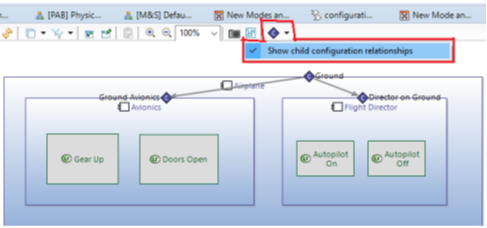
It is then possible to establish child relations by using the "Add child configuration" edge tool: 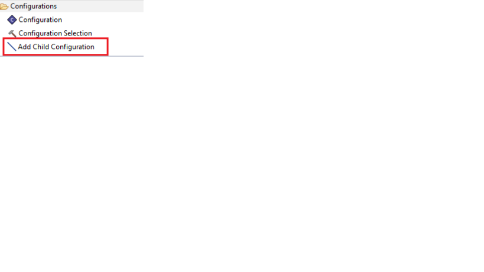
To remove a relationship, simple delete the relationship edge in the diagram.
The prototype does not include validation rules that help to ensure the consistency of configurations, e.g. that a configuration references only elements that are in its scope, or that a configuration only references configurations of subcomponents as its child configurations. Such rules will be delivered in a subsequent version. However, the prototype includes several new validation rules related to State Machines:
DWF_SM_16 - A Mode/State has at least one incoming transition. When designing an FSM, it is important that all Mode/State has at least one incoming transition. In fact, if no such transition exists, the Mode/State is said unreachable.
DWF_SM_17 - There exists at least two outgoing transition from a Fork Pseudo-State. A Fork Pseudo-State serves to split an incoming transition into two or more transitions.
DWF_SM_18 - There exists at least two incoming transition to a Join Pseudo-State. A Join Pseudo-State serves to merge several transitions.
DWF_SM_19 - Into a region, there exists no more than one Initial Pseudo-State. There is no more than one Initial Pseudo-State into a Region.
DWF_SM_20 - There exists at least one transition starting from an Initial Pseudo-State. Into a region with an Initial Pseudo-State, there exists at least one transition starting from this Initial Pseudo-State.
DWF_SM_21 - There exists at most one transition starting from an Initial Pseudo-State. Into a region with an Initial Pseudo-State, there exists at most one transition starting from this Initial Pseudo-State.
DWF_SM_22 - Outgoing transitions of a Pseudo-State should not have a trigger. Outgoing transitions of a Pseudo-State should not have a trigger.
DWF_SM_23 - There exists at least two outgoing transition from a Choice Pseudo-State. There exists at least two outgoing transition from a Choice Pseudo-State.
DWF_SM_24 - Outgoing transitions from a Fork Pseudo-State should not have Guard. Outgoing transitions from a Fork Pseudo-State should not have Guard.
DWF_SM_25 - Incoming transitions to a Join Pseudo-State should not have Guard. Incoming transitions to a Join Pseudo-State should not have Guard.
DWF_SM_26 - Transitions starting from Initial Pseudo-States cannot have Guard. Transitions starting from Initial Pseudo-States cannot have Guard.
DWF_SM_27 - Limit the number of inclusions of M/Ss into M/Ss to 3 levels. Limit the number of inclusions of M/Ss into M/Ss to 3 levels.
DWF_SM_28 - A Mode/State has at least one outgoing transition. When designing an FSM, it is important that all Mode/State have at least one outgoing transition. In fact, if no such transition exists, the Mode/State is said blocking state.
DWF_SM_29 - Incoming transitions to a Join Pseudo-State should not have Trigger. Incoming transitions to a Join Pseudo-State should not have Trigger.
DWF_SM_30 - Into a region, there exists at least one Initial Pseudo-State. There is at least one one Initial Pseudo-State into a Region.
DWF_SM_31 - At least one M/S of the component FSMs has this function set as available. Let consider a function allocated to a component. If an FSM is linked to this component, then at least one M/S of this FSM has this function set as available.
DWF_SM_32 - The function involved by the ‘do activity’ of the M/S has to be available in this M/S or in the M/S of the higher level (if existing). The function involved by the ‘do activity’ of the M/S has to be available in this M/S or in the M/S of the higher level (if existing).
DWF_SM_33 - All functions of a ‘functional chain’ should be allocated to a component if this functional chain is set available into a M/S of a FSM linked to this component. A functional chain can be set available into a M/S of an FSM linked to a component, only if all functions of this functional chains are allocated to this component.
DWF_SM_34 - The first element into the lifeline of a component should be a M/S if at least one FSM is linked to this component. Within an exchange scenario, for the lifeline of a component for which an FSM is linked, one of the following is required:
DWF_SM_35 - Between two consecutive M/Ss placed on a lifeline, there exists a path of transitions between these M/Ss. Within an exchange scenario, between two consecutive M/Ss placed on a lifeline, there exists a path of transitions between these M/Ss.
DWF_SM_36 - The functional exchange trigger of two consecutive M/Ss has to be added between these two M/Ss in the lifeline. Within an exchange scenario, let consider two consecutive M/Ss put in a lifeline with an existing transition triggered by a functional exchange; if the lifeline of the architectural part (i.e.: another component or an actor), for which the function starting the functional exchange, is present into the exchange scenario; this functional exchange has to be added between these two M/Ss.
DWF_SM_38 - Target M/Ss of outgoing transitions from a Fork Pseudo-State must have to be in a distinct region than the Fork Pseudo-State. Target M/Ss of outgoing transitions from a Fork Pseudo-State must have to be in a distinct region than the Fork Pseudo-State.
DWF_SM_39 - Outgoing transitions from a Fork Pseudo-State must target M/Ss into distinct regions of an orthogonal state. Outgoing transitions from a Fork Pseudo-State must target M/Ss into distinct regions of an orthogonal state.
DWF_SM_40 - Source M/Ss of incoming transitions to a Join Pseudo-State must have to be in a distinct region than the Join Pseudo-State. Source M/Ss of incoming transitions to a Join Pseudo-State must have to be in a distinct region than the Join Pseudo-State.
DWF_SM_41 - Incoming transitions to a Join Pseudo-State must originate from M/Ss into different regions of an orthogonal state. Incoming transitions to a Join Pseudo-State must originate from M/Ss into different regions of an orthogonal state.
DWF_SM_42 - Final State should not include a Region. Final State should not include a Region.
DWF_SM_43 - Generate global modes of the system and then analyze the configurations availability. Generate global modes of the system and then analyze the configurations availability in these global modes. Not a true ‘validation’, has rather informational purpose.
DWF_SM_44 - No inclusion of modes into states. The inclusion of modes into states is not allowed.
DWF_SM_45 - No inclusion of states into modes . The inclusion of states into modes is not allowed.
DWF_DC_34 - Analyzing the assurance of the FunctionalChain in the States/Modes. Analyzing the assurance of the FunctionalChain in the States/Modes. Validates on FunctionalChain. The functional chain is known as fully assured in a state/mode of a component, if all its functions allocated to this component are available in all configurations available in this state/mode
DWF_DC_35 - Analyzing the assurance of the FunctionalChains in the State/Mode. Analyzing the assurance of the FunctionalChains in the State/Mode. Validates on Mode. The functional chain is known as fully assured in a state/mode of a component, if all its functions allocated to this component are available in all configurations available in this state/mode